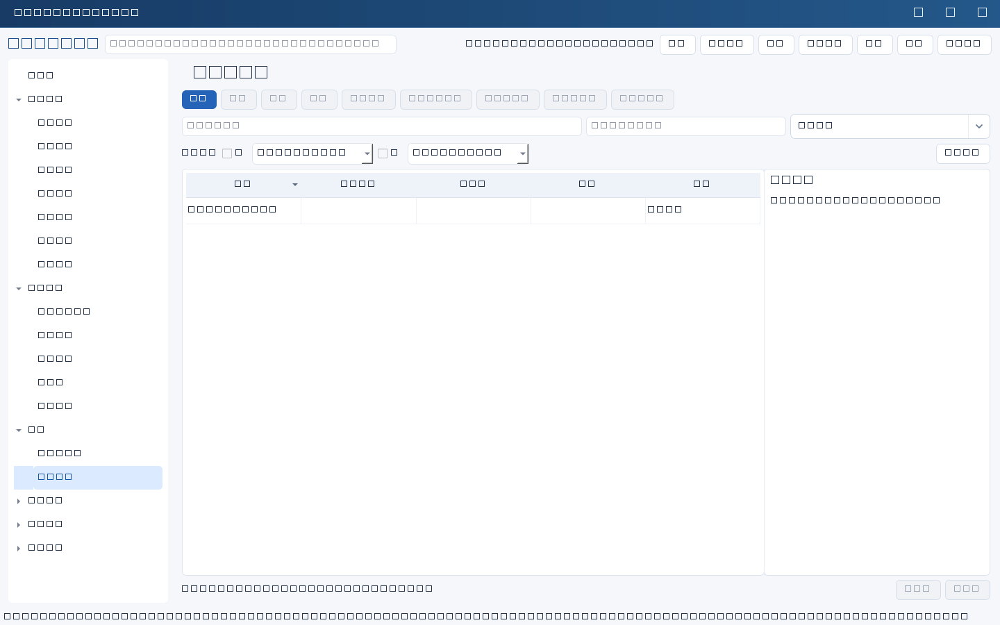
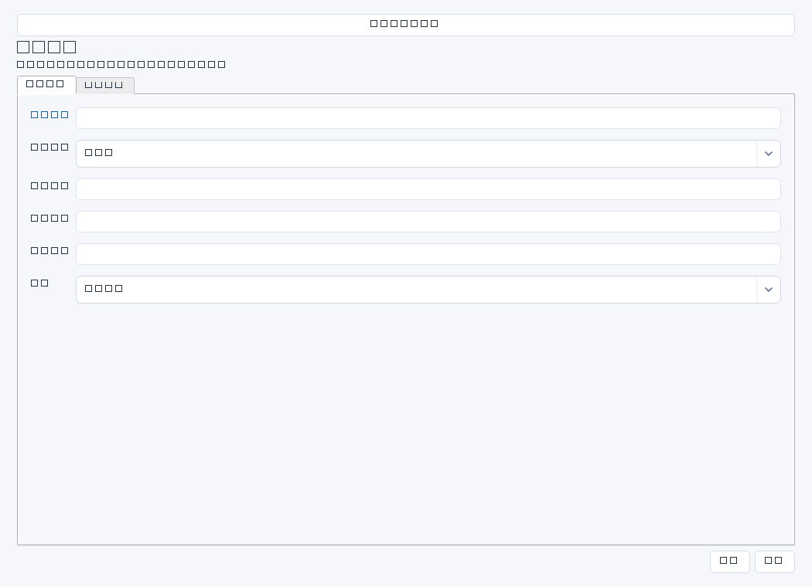

记录有目标、有事实依据、有员工反馈和复核的人员考核。考核材料应来自已确认目标、任务成果、运维质量和协作反馈，不用单一任务数量代替绩效判断。


操作步骤与资料获取
- 先建立人员记录，取得本周期岗位目标和考核制度；与员工确认目标、权重及例外情况，初始状态选择目标设定。
- 考核期内从任务验收、事件报告、项目交付和培训成果收集证据，保留来源与日期，区分个人贡献和团队成果。
- 依次补充员工自评、主管评价、评分和员工反馈；状态可使用待评价、待反馈、待复核，但软件不强制依次流转。
- 定稿前复核证据、口径和反馈；已定稿需人员ID、考核周期、成果证据、主管评价、员工反馈、复核人六项非空。
字段逐项说明
| 操作 / 字段 | 详细说明 |
|---|---|
| 名称 | 考核标题，强制非空；建议“陈晨—2026年第二季度考核”。 |
| 人员ID | 关联被考核人员；非空时强制引用有效people记录，已定稿时强制非空。 |
| 考核周期 | 评价时间范围，例如2026年第二季度；自由文本，已定稿时强制非空。 |
| 考核目标 | 周期开始时约定的结果及责任边界；建议列目标来源、确认日期及变更说明。 |
| 指标口径 | 定义指标计算、取数范围、排除项和数据来源，避免故障次数、恢复耗时口径随意变化。 |
| 权重说明 | 写各目标权重和计算方法；文本字段，软件不校验合计100%，也不自动按权重算分。 |
| 成果证据 | 任务验收、项目交付、事件复盘等依据的摘要与受控路径；已定稿时强制非空。 |
| 员工自评 | 员工对成果、不足和改进的陈述；建议由员工确认，定稿时并非强制字段。 |
| 主管评价 | 以事实评议目标完成、质量和协作，解释差异；已定稿时强制非空。 |
| 评分 | 可留空；填写时强制非负十进制且不超过100，不接受“优秀”等文字，定稿不强制评分。 |
| 员工反馈 | 记录员工意见、异议或已确认无补充，以及确认日期；已定稿时强制非空，不应代写未确认意见。 |
| 复核人 | 负责核对事实与公平性的人名；已定稿时强制非空，但不验证在线身份。 |
| 状态 | 界面仅提供目标设定、待评价、待反馈、待复核、已定稿。已定稿记录必须先仅改状态为待复核并保存，然后才能再次编辑内容。 |


示例（仅演示）
| 操作 / 字段 | 详细说明 |
|---|---|
| 名称 | 陈晨—2026年第二季度考核 |
| 人员ID | |
| 考核周期 | 2026年第二季度 |
| 考核目标 | 完成ERP隔离恢复验证；完善基础设施交接文档 |
| 指标口径 | 恢复时长以演练启动至业务可用为准，计划等待不从总时长剔除 |
| 权重说明 | 恢复验证60%，文档与交接40%；人工复核评分 |
| 成果证据 | DR-20260412演练报告、交接清单V2，存于受控资料库/绩效/2026Q2 |
| 员工自评 | 完成恢复验证，仍需缩短数据库检查时间 |
| 主管评价 | 交付符合标准；建议下季度完善自动校验脚本 |
| 评分 | 88 |
| 员工反馈 | 认可评价；建议补充数据库培训，2026-06-28确认 |
| 复核人 | 李明 |
| 状态 | 待复核 |
形成闭环
- 示例人员ID留空仅演示待复核；真实定稿前必须选择有效人员记录。
- 确认六项定稿必填项和评分范围，核对员工反馈原始材料后再保存已定稿。
- 定稿后发现错误，先仅改状态为待复核保存，再修改内容并重新复核定稿；保留更正原因和原始证据。
常见误区与边界
- 把定稿必填误写为评分、自评或权重必填；实际强制项是六项指定字段。
- 认为状态切换会自动通知员工、组织复核或认证签字。
- 只按工单数量考核，没有难度、业务影响和质量依据。